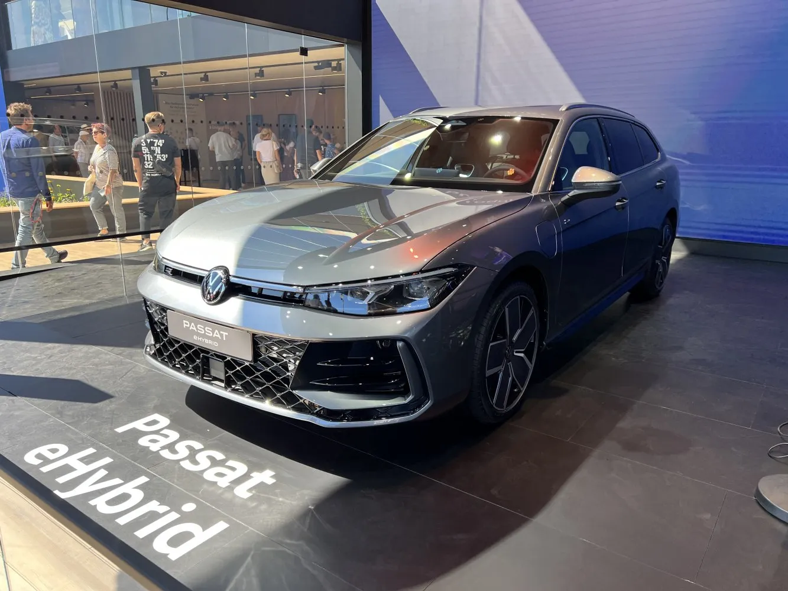

|
 |
A Passat a jövőben csak Variant változatban kapható és még több helyet biztosít: 50 mm-rel nagyobb tengelytáv, akár 1920 literes csomagtér és még nagyobb hátsó lábtér teszik az új modellt társsá a mindennapokban, legyen szó üzleti ebédről, a gyerekek fociedzéséről vagy akár családi vakációról. Formavilága: egyértelműen Passat, jellegzetesen Volkswagen, ugyanakkor minden szempontból új. Az intuitívan kezelhető műszerfalon még nagyobb menetkényelem várja a modern asszisztensrendszereknek és az infotainment következő generációjának köszönhetően. |